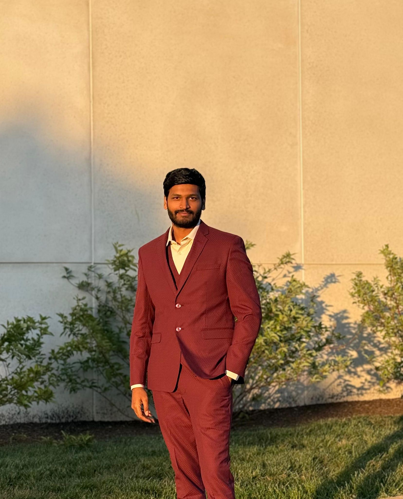
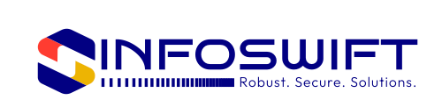

Hi, I'm SAI NIHAL
AI Engineer | Software Engineer
Turning complex problems into real-world products. Backend & AI Engineer architecting secure microservices and deploying production-grade generative AI across cloud infrastructure with strong engineering fundamentals.
About Me

Backend & AI Engineer (Python/Java, Azure/GCP), architecting secure microservices and deploying production-grade generative AI (RAG, agentic workflows). Scaled a multi-tenant ecosystem for 100+ concurrent tenants, slashing latency by 98% via asynchronous Azure ETL pipelines; engineered distributed inference pipelines (Vertex AI) to eliminate bottlenecks for large-scale unstructured datasets.
Currently pursuing my Master's in Computer Science at Indiana University Bloomington, I combine strong academic foundations with hands-on industry experience to deliver production-grade solutions across cloud infrastructure, AI/ML, and full-stack development. Microsoft Certified: Azure AI Engineer Associate (AI-102) | Azure Fundamentals (AZ-900).
My Journey
Indiana University Bloomington
Research Assistant
Engineered an obstetric triage classification model, achieving a 94.0% Clinical Safety Accuracy and 93.5% F1 Score, by implementing a two-stage supervised fine-tuning pipeline on a Llama 3 8B model.
- Minimized hallucinated reasoning and anchored predictions to validated guidelines by developing a gated Retrieval-Augmented Generation (RAG) architecture, dynamically retrieving clinical context via vector search when similarity exceeded a 0.65 threshold.
- Streamlined model training by curating a structured dataset of 788 patient scenarios, utilizing knowledge distillation to translate deterministic decision rules into natural-language training data.
- Eliminated cloud API latency and guaranteed local patient data privacy by deploying a 4-bit quantized Small Language Model (SLM) on high-performance computing clusters using Low-Rank Adaptation (LoRA).

Infoswift Corp.
Software Engineer (AI)
Built an asynchronous serverless ETL pipeline on Azure Functions using Docker to parallelize Gemini inference at scale, eliminating analytics bottlenecks for 20,000+ files.
- Secured 100% data isolation for 100+ concurrent tenants and prevented cross-tenant leakage by engineering a multi-tenant microservice (FastAPI, Azure). Enforced tenant-scoped paths and HMAC-signed JWTs via GitHub Actions CI/CD.
- Reduced API error rates by 40% and maintained 99.9% uptime during traffic spikes by implementing distributed rate-limiting middleware (Redis, Token Bucket).
- Achieved 90% extraction accuracy for clinical data (vitals, labs), transforming unstructured reports into structured assets, by engineering a RAG evaluation framework (LangChain).
Zion Cloud Solutions (ZionAI)
AI Engineer
Minimized review latency by 30% and enhanced Q&A reasoning by deploying distributed systems on Google Vertex AI (AutoML, Docker, K8s).
- Benchmarked few-shot prompting across 50+ repositories to streamline policy analysis.
- Slashed developer initialization time by 40% by architecting a Small Language Model (SLM) scaffolding (Node.js) to automate infrastructure setup.
- Enforced data integrity for 10,000+ concurrent records by building a type-safe validation framework across PostgreSQL and Azure SQL.
Infoswift Corp.
Software Engineer (Cloud/AWS)
Accelerated feature deployment cycles by 90% by migrating manual tasks to a fully automated CI/CD pipeline using AWS CodePipeline and GitHub Actions.
- Cut cloud infrastructure costs by 20% and improved incident response time by 50% by conducting EC2 rightsizing audits.
- Automated S3 archival policies and engineered an Amazon CloudWatch monitoring suite for 15+ servers.
My Skillset
Programming Languages
Java
Python
TypeScript
SQL
C
JavaScript
R
HTML/CSS
AI & Machine Learning
Generative AI
LLMs
RAG
LangChain
Prompt Engineering
Frameworks & Libraries
Spring Boot
Next.js
Node.js
FastAPI
Cloud, DevOps & Methods
Azure
AWS
Google Cloud (Vertex AI)
Docker
Kubernetes
CI/CD (GitHub Actions)
Agile
Scrum
Architectures & Concepts
Distributed Systems
Microservices
RESTful APIs
ETL Pipelines
Postman
Data & Visualization
MySQL
Azure SQL
MongoDB
Redis
Tableau
Power BI
Featured Projects
01
Distributed Serverless Log Processing
Processed 10GB+ of daily raw logs in real-time by building a high-throughput ingestion engine using Azure Functions, eliminating 90% of manual parsing overhead.
Azure Functions · Azure SQL · Python · Serverless · ETL
02
Hoosier Hub: Full Stack Social App
Engineered a high-concurrency backend scalable to 50,000+ students and 1,000+ clubs, ensuring stability and sub-200ms latency with Docker-based CI/CD and JWT auth.
Spring Boot · MongoDB · OpenAPI · JWT · Docker · CI/CD
03
IPL Data Storytelling Dashboard
Data visualization project uncovering untold stories of the Indian Premier League using match-level data and brand analytics.
Python · Plotly · Seaborn · Tableau · Jupyter
04
Sign Language Detection using LSTM
Developed a sign language recognition system using Python, OpenCV, and Keras with a CNN and SGD optimization, enabling seamless hand gesture prediction.
Python · OpenCV · Keras · CNN · Computer Vision
Data Dashboards
01
Bike Sales Analysis Excel Dashboard
Comprehensive sales analysis dashboard built using Excel, featuring interactive visualizations, pivot tables, and key performance metrics.
Excel · Pivot Tables · Charts · Data Analytics
02
Data Professional Survey Dashboard
Interactive dashboard analyzing survey data from data professionals, showcasing career insights, salary distributions, and industry trends.
Power BI · Excel · Survey Analytics · Data Cleaning
03
Airbnb Dashboard using Tableau
Dynamic Tableau dashboard analyzing Airbnb listings, pricing trends, and market insights across different regions.
Tableau · Data Visualization · Geospatial Analysis
Education
Indiana University Bloomington
Master of Science in Computer Science · GPA: 3.87/4.0
B V Raju Institute of Technology
B.Tech in Computer Science · GPA: 8.75/10
Certifications


Publications
Enhancing Soft Skill Development with ChatGPT and VR
IEEE Conference Paper exploring the integration of AI and Virtual Reality technologies for improving soft skill development in educational environments.
Get In Touch
I'm currently looking for new opportunities and collaborations in software engineering, AI engineering, and cloud infrastructure. Whether you have a project in mind, want to discuss research opportunities, or just want to say hello, I'd love to hear from you.